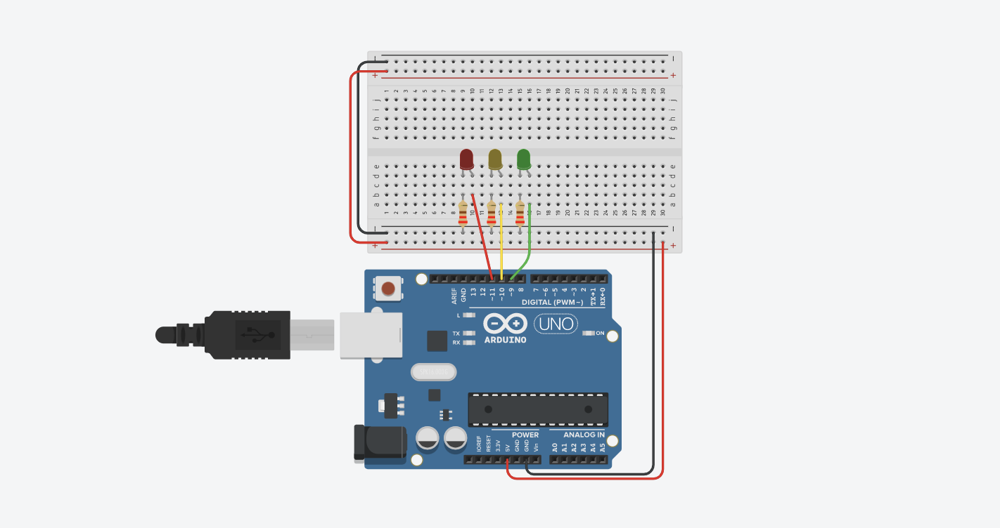
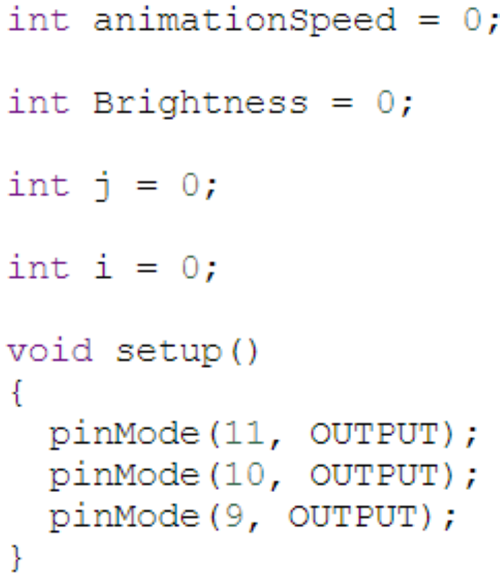

3 Running lights
One of the arduino assignments was to create a board with 3 lights
The lights in my simulation are "chasing" each other, fading in and out.
Steps:
Get the right components
To start off, in tinkercad, select:
- An arduino board
- A breadboard
- 3 LED lights
- 3 220Ohm resistors
Set up the connections
Connect the breadboard to the arduino board by connecting the 5V pin and GND pin to the live and ground of the breadboard,respectively.
Place the LEDs on the breadboard side by side and connect a resistor to the negative side of each LED.
Connect the positive side of the LEDs to pins 9, 10 and 11.
Code!
Firstly, define animationSpeed and brightness. Then in voidsetup, make the pins 9, 10 and 11 outputs.
Next for the voidloop, set the animationSpeed to 3.
To make the LEDs fades in write the command "for (Brightness = 0; Brightness <= 255; Brightness += 1)" (255 to 0 for fading out) and since fading is analog, write" analogWrite(11, Brightness)".
Since I wanted to have the lights "chase" each other, I added a line to turn off pin 9 after fading out of pin 11, off 11 after 10 and 10 after 9.
Tip
Copy paste the lines for each pin to minimise any errors since you check the same code 3 times.
Light with button
The second arduino assignment was to create a light with a button
The lights in my simulation are "chasing" each other, fading in and out.
Steps:
Get the right components
To start off, in tinkercad, select:
- An arduino board
- A breadboard
- 3 LED lights
- 3 220 Ohm resistors
Set up the connections
Connect the breadboard to the arduino board by connecting the 5V pin and GND pin to the live and ground of the breadboard,respectively.
Place the LEDs on the breadboard side by side and connect a resistor to the negative side of each LED.
Connect the positive side of the LEDs to pins 9, 10 and 11.
Code!
Firstly, define animationSpeed and brightness. Then in voidsetup, make the pins 9, 10 and 11 outputs.
Next for the voidloop, set the animationSpeed to 3.
To make the LEDs fades in write the command "for (Brightness = 0; Brightness <= 255; Brightness += 1)" (255 to 0 for fading out) and since fading is analog, write" analogWrite(11, Brightness)".
Since I wanted to have the lights "chase" each other, I added a line to turn off pin 9 after fading out of pin 11, off 11 after 10 and 10 after 9.
Here is the code: